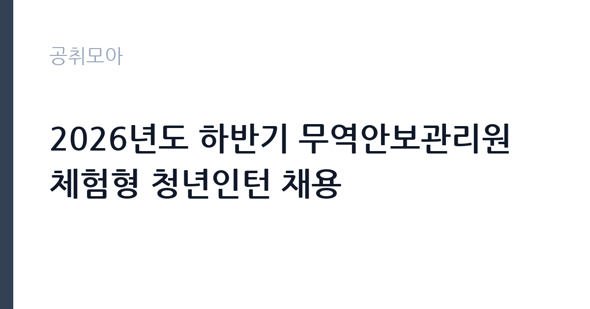

[공공기관] 2026년도 하반기 무역안보관리원 체험형 청년인턴 채용
무역안보관리원 · 서울 · 마감 2026-11-03 (D-15) · 출처 잡알리오

한눈에 보는 모집 조건
| 기관 | 무역안보관리원 |
|---|---|
| 공고명 | 2026년도 하반기 무역안보관리원 체험형 청년인턴 채용 |
| 고용형태 | 청년인턴(체험형) |
| 근무지 | 서울 |
| 게시일 | 2026-10-19 |
| 마감일 | 2026-11-03 (D-15) |
지원자격, 이렇게 읽으세요
- 공공기관 채용공시
- 세부 조건은 원문 공고문 확인
응시자격의 기본은 만 34세 이하 청년입니다. 학력·성별·경력은 무관하고, 남자는 병역필 또는 면제자여야 합니다. 여기에 제대군인 연령 연장 규정이 적용됩니다. 군 복무기간이 1년 미만이면 1세, 1년 이상 2년 미만이면 2세, 2년 이상이면 3세가 연장됩니다. 놓치기 쉬운 함정은 어학 요건입니다. 무역안보관리원은 비확산·수출통제 분야 국제회의 참석과 해외기관 협력이 잦아, 직전 공고에서도 TOEIC 환산 700점 이상을 요구했습니다. 어학점수는 접수 마감일 기준 유효기간 내 성적이어야 하므로, 만료된 성적을 그대로 쓰면 서류에서 탈락합니다. 공고문의 어학 기준표를 반드시 대조하십시오.
이 공고의 포인트
이 인턴의 매력은 세 가지입니다. 첫째, 보수 수준입니다. 직전 하반기 공고에서는 월 235만원 세전으로 안내돼, 체험형 인턴 중에서는 높은 편입니다. 둘째, 업무의 전문성입니다. 전략물자 수출통제와 무역안보는 우리나라에서 사람이 많지 않은 분야라, 인턴 경험 자체가 차별화됩니다. 셋째, 근무지가 서울 강남 무역센터 일대입니다. 접근성이 좋고, 국제 업무를 가까이에서 볼 수 있습니다. 다만 체험형 인턴은 정규직 전환을 전제로 하지 않으므로, 경력 형성 목적으로 접근하십시오.
전형은 어떻게 진행되나
전형은 서류전형과 면접전형으로 진행됩니다. 직전 공고를 보면 서류에서 응시자격 충족 여부와 입사지원서를 평가하고, 어학점수와 자기소개서를 합산했습니다. 면접은 경험면접 방식으로 조직이해능력, 대인관계능력, 직업윤리, 의사소통능력, 자기개발능력 다섯 항목을 평가했습니다. 서류에서 지원서를 불성실하게 작성하면 불합격 처리된다는 점도 명시돼 있었습니다. 기관명 오기재, 항목 누락, 문항 간 답변 중복, 의미 없는 문자 나열이 해당됩니다. 접수는 기관 채용 사이트에서 온라인으로만 이뤄집니다.
원문에서 확인한 전형 방식
ㅇ 학력, 성별, 경력 등 무관 ㅇ 남자의 경우 병역필 또는 면제자(병역 기피사실이 없는 자) ㅇ 청년고용촉진 특별법에 따른 만 34세 이하인자 제대군인지원에 관한 법률 시행령 제19조에 따라 제대군인에 대한 청년 인정 연령을 아래와 같이 연장함 - 군 복무기간 1년 미만 1세, 1년 이상~2년 미만 이면 2세, 2년 이상 3세
이런 분께 추천해요
- 만 34세 이하 청년으로 국제통상·수출통제 분야를 경험하고 싶은 분
- 공인영어 성적이 유효한 분 — 직전 공고 기준 환산 700점 이상이 요구됐습니다
- 서울 강남 지역에서 근무할 수 있는 분 — 무역센터 일대 근무입니다
지원 전 체크리스트
- 공인영어 성적이 유효기간 내에 있는가 — 직전 공고 기준 핵심 요건입니다
- 만 34세 이하 요건과 제대군인 연령 연장 해당 여부를 확인했는가
- 병역필 또는 면제 요건을 충족하는가
- 마감일 2026-11-03 이전에 온라인 접수를 완료했는가
모집 일정과 제출 타이밍
마감은 2026년 11월 3일입니다. 접수 기간이 2주 안팎이므로 준비할 시간은 있지만, 어학 성적표 발급에 시간이 걸릴 수 있습니다. 첫 주에 공고문의 어학 기준표를 확인하고 성적표를 준비하십시오. 둘째 주에는 자기소개서를 작성하고, 마감 사흘 전에 제출하는 일정이 안전합니다. 마감일에는 지원자가 몰려 서버 장애가 발생할 수 있다고 공고에 명시돼 있으니, 미리 제출하십시오.
직무 이해하기: 공공기관
무역안보관리원은 전략물자 수출통제와 무역안보 정책을 수행하는 기관입니다. 청년인턴은 경영지원이나 연구지원 부서에 배치되어 실무를 보조합니다. 구체적으로는 수출통제 관련 자료 조사와 정리, 판정·이행 업무 지원, 국제회의와 교육 운영 보조, 문서 작성과 관리, 부서 행정 지원 등이 핵심입니다. 전략물자 판정은 기업의 수출 거래가 허가 대상인지 판단하는 업무로, 정확성이 생명입니다. 인턴이라도 문서 오류가 곧 업무 오류로 이어질 수 있어 꼼꼼함이 요구됩니다. 영어 자료를 다룰 일이 많아 어학 요건이 붙은 이유도 여기에 있습니다.
자기소개서 작성 팁
이 인턴의 자기소개서는 국제 업무에 대한 관심과 정확성을 보여주는 것이 핵심입니다. 첫 문단에 지원 동기를 한 문장으로 쓰고, 무역안보나 수출통제에 관심을 갖게 된 계기를 붙이십시오. 본론에서는 자료 조사와 문서 작성 경험을 구체적으로 쓰십시오. 영어 자료를 읽고 요약한 경험, 여러 부서의 자료를 정리해 보고서를 만든 경험이 좋은 소재입니다. 어학 점수는 이미 서류에서 평가되므로, 자기소개서에서는 영어를 실제로 써본 경험을 쓰는 것이 효과적입니다. 마무리에는 인턴 기간에 배우고 싶은 업무를 구체적으로 적으십시오.
면접 준비 포인트
면접은 경험면접 방식입니다. 조직이해능력, 대인관계능력, 직업윤리, 의사소통능력, 자기개발능력을 다섯 항목으로 평가하므로, 각 항목에 대응하는 경험을 하나씩 준비하십시오. 예를 들어 조직이해는 인턴이나 아르바이트에서 조직의 규칙을 지킨 경험, 의사소통은 갈등을 조정한 경험으로 준비하면 됩니다. 무역안보관리원이 하는 일을 한 문장으로 설명할 수 있어야 합니다. 답변은 상황, 행동, 결과 순으로 짧게 말하십시오. 영어 면접은 아니지만, 영어 자료를 다뤄본 경험을 물을 수 있습니다.
급여·근무조건 읽는 법
보수는 공고문에 월 단위로 명시됩니다. 직전 하반기 무역안보관리원 체험형 청년인턴 공고에서는 월 235만원 세전으로 안내됐고, 그 이전 2차 공고에서는 월 230만원이었습니다. 이번 회차의 정확한 금액은 원문 공고문에서 확인하셔야 합니다. 인턴은 정규직이 아니므로 정규직 보수표가 적용되지 않고, 인턴 운영 기준에 따른 월정액이 지급됩니다. 4대 보험과 주 5일 근무, 연차 휴가, 유연근무제가 적용된다고 안내된 사례가 있습니다. 근무기간은 임용일부터 정해진 날짜까지이며, 회차에 따라 1년 안팎입니다.
자주 묻는 질문
- 어학 성적이 꼭 필요한가요?
직전 공고 기준으로 TOEIC 환산 700점 이상이 요구됐습니다. 기관 업무 특성상 영어 자료를 다루기 때문이며, 이번 공고의 정확한 기준은 원문에서 확인하십시오. - 학력 제한이 있나요?
없습니다. 학력·성별·경력 무관으로 공고돼 있고, 만 34세 이하 청년이면 지원할 수 있습니다. - 급여는 얼마인가요?
직전 하반기 공고에서 월 235만원 세전으로 안내됐습니다. 이번 회차 금액은 원문 공고문의 보수 항목을 확인하십시오.
함께 보면 좋은 공고
[공공기관] 2026년 하반기 중소벤처기업진흥공단 체험형 청년인턴(일반) 채용 공고 — 마감 2026-11-03[공공기관] 2026년 제3차 동남권원자력의학원 직원채용 공고 — 마감 2026-11-02[공공기관] 2026년 한국잡월드 정규직 신입(5급) 직원 채용 공고 — 마감 2026-11-04출처: 잡알리오 공개정보를 바탕으로 공취모아가 정리한 안내글입니다. 모집 조건·일정은 변경될 수 있으니 지원 전 반드시 원문 공고문을 확인하세요. 본 글은 정보 제공용이며 합격을 보장하지 않습니다.